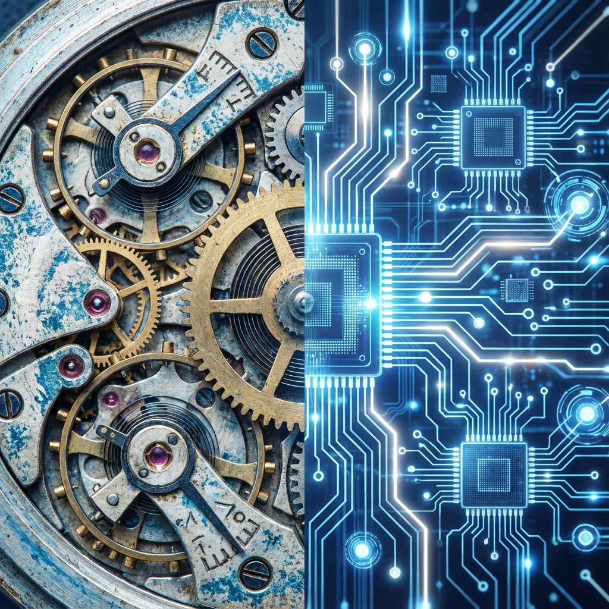

O que é Transformação Digital?
A Transformação Digital transcende a simples adoção de novas tecnologias; ela representa uma reestruturação fundamental na forma como as organizações operam e entregam valor. Não se trata apenas de digitalizar processos existentes (o que chamamos de digitization), mas de aproveitar o potencial da tecnologia para criar novos modelos de negócios.
Segundo um estudo da McKinsey, empresas que lideram a transformação digital têm 23 vezes mais chances de adquirir clientes, 6 vezes mais chances de reter esses clientes e 19 vezes mais chances de serem lucrativas.
Analogia da Metamorfose
A transformação digital é frequentemente comparada à metamorfose de uma lagarta em borboleta. Uma lagarta mais rápida (melhoria incremental) não é o mesmo que uma borboleta (transformação total). A borboleta tem capacidades completamente novas, como voar, que a lagarta jamais teria, não importa o quão eficiente fosse.
Digital vs. Analógico: A Convergência
No passado, o mundo físico e o digital eram separados. Hoje, vivemos na era "Phygital" (Physical + Digital). Sensores IoT (Internet das Coisas) conectam máquinas industriais à nuvem, permitindo manutenção preditiva. O varejo usa Big Data para personalizar a experiência na loja física.
Os 3 Pilares da Inovação
Para que a inovação seja bem-sucedida, ela deve equilibrar três lentes, conceito popularizado pela IDEO:
- Viabilidade (Negócios): O modelo é financeiramente sustentável? Existe um mercado pagante?
- Desejabilidade (Pessoas): Resolve uma dor real do usuário? As pessoas querem isso?
- Praticabilidade (Tecnologia): É tecnicamente possível construir isso com os recursos atuais?
O Contexto da 4ª Revolução Industrial
Estamos vivendo a Indústria 4.0, caracterizada pela fusão de tecnologias. Inteligência Artificial, Robótica, Computação em Nuvem e Biotecnologia não estão evoluindo isoladamente, mas se potencializando mutuamente. A velocidade dessa mudança é exponencial, não linear.
Resumo da Aula
- Não é só Tech: Transformação Digital é 80% pessoas e cultura, 20% tecnologia.
- Dados são o novo petróleo: A capacidade de capturar e analisar dados é o diferencial competitivo.
- Adaptação: O Darwinismo Digital diz que não é o mais forte que sobrevive, mas o que melhor se adapta à mudança.